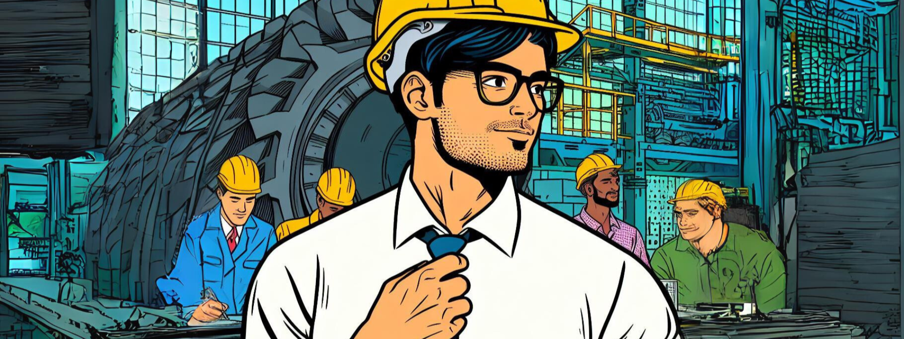
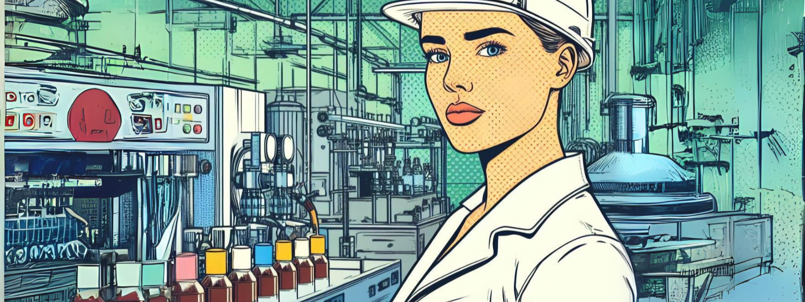
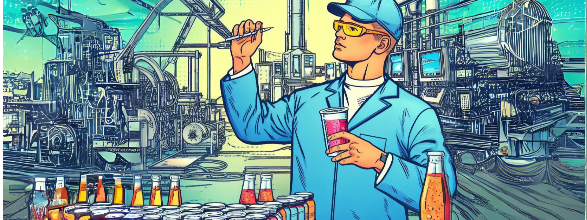

Estatística Descritiva
Aviso
Pera aí! Como esse é o primeiro assunto do site, queremos te explicar uma coisinha!
Caso ainda não saiba aqui nesse ambiente utilizamos uma técinica diferente pra ensinar, a
ABP.
ABP se destaca por ser uma abordagem educacional que coloca os alunos no centro do processo
de ensino-aprendizagem, incentivando-os a desenvolver habilidades para resolução de
problemas, pensamento crítico e colaboração. Esse método tem como característica instigar o
estudante a pensar criticamente por si próprio, buscando novas fontes de conhecimento para
resolver os desafios do mundo real. Promovendo uma compreensão mais profunda dos conceitos e
uma aplicação prática do conhecimento.
Contexto
Você é um engenheiro de produção em uma fábrica de refrigerantes. A empresa está comprometida em manter altos padrões de qualidade e sabor consistente em seus produtos.

Contexto
No entanto, recentemente, a gerência percebeu que algumas garrafas de refrigerante estão apresentando variações em suas características (tanto físicas como físico-químicas) que podem não agradar os clientes.
Objetivo
Sua tarefa é analisar a produção de uma linha específica de envase e determinar se o volume de líquido, e o pH em cada garrafa estão dentro dos padrões estabelecidos.

Análise
Depois de realizada uma amostragem sistemática de três garrafas de uma em uma hora, totalizando ao final de um dia 72 unidades, você conseguiu juntar os seguintes dados.
{{table|safe}}
Análise
Com base nos dados adquiridos, você pode realizar várias análises estatísticas para garantir que o volume de líquido e o pH estejam dentro dos padrões estabelecidos.

Compilador
Nesta parte você pode fazer os calculos que precisar utilizando python.
Esse compilador já está integrado com a base de dados. Pode acessá-la usado "df"